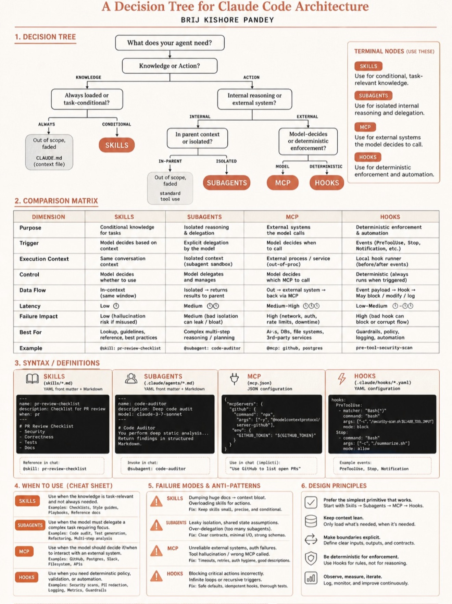

▸ Claude Code Architecture Decision Tree / Pandey
▸ 분기 1
설계·복잡 추론
Claude Opus 4.7 + Extended Thinking (1M context)
▸ 분기 2
단순 구현 <200줄
Sonnet 4.6 직접 (저비용)
▸ 분기 3
대량 구현 500줄+
Codex × 4 병렬 (codex-auto)
▸ 분기 4
검증 (기본)
Haiku 4.5 × 2 + Prompt Caching 90%
▸ 분기 5
검증 (초장문 >500k)
Gemini Flash 1M 토큰 (멀티모달도)
▸ 분기 6 (Fallback)
Quota 소진 시
지수 backoff (10m → 20m → 40m → 2h) + 다른 AI 자동 대체